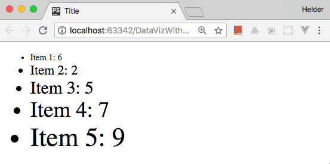

Source github
Selecting and Binding Data
Selecting and appending
The selection methods select() and selectAll() receive a CSS selector expression and return a D3 handle for a node or a set of nodes. You can convert the D3 handle into a DOM object calling node() or nodes().
Add the following HTML to the <body> of your HTML file (or use Selecting/1-select.html):
<p>See results in console log.</p>
<div id="section">
<p class=first>Paragraph 1</p>
<p>Paragraph 2</p>
</div>
<p>Paragraph 3</p>
Now you can use the JavaScript console (or a <script> block in your page) to type in the following code, which shows how select() and selectAll() can be used:
const div = d3.select("#section"); // selects element with the
// "section" ID
const domDiv = div.node(); // converts the object into a
// DOM node
const firstP = d3.select("p"); // selects the first <p>
// in the page
const allParagraphs = d3.selectAll("p"); // selects all four <p> nodes
// in the page
const allPDom = allParagraphs.nodes(); // converts selection into
// DOM nodelist
const sectionParagraphs =
d3.select("div")
.selectAll("p"); // selects the two <p> nodes
// inside <div>
A selection object serves as a handle to elements in your page. You can use it to change their styles, properties, attributes, classes, and contents, using methods that can receive static or dynamic values (using functions) as parameters. The following examples demonstrate some of these methods (see Selecting/2-attributes-styles.html):
div.style('border', 'solid blue 2px'); // draws blue border around <div>
firstP.classed('big', true); // adds class ‘.big’ to
first paragraph
firstP.text('This is paragraph zero'); // replaces contents of
first paragraph
allParagraphs.style('font-weight', 'bold'); // applies style to set
of paragraphs
// this looks promising, however there is nothing tagged with class "first" so nothing happes
d3.select('.first') // selects first element of class ‘.first’
.attr('title', 'Tooltip') // adds an attribute
.style('font-variant', 'small-caps') // applies a style
.html('This is a <b>bold</b> paragraph.'); // replaces contents with HTML
The select() method will always return only one object (if the selector matches more items, only the first will be returned). The selectAll() method returns a collection, which can be iterated with the each() method, which receives a callback function, which receives up to three parameters. Inside the function, this refers to the current DOM element, and d3.select(this) wraps it in a D3 selection object, which can be manipulated with selection methods, as follows:
sectionParagraphs.each(function(d, i) { // i is the index
d3.select(this).classed('red', true);
console.log(`Paragraph ${i}: `, this); // this refers to the current element
});
```
This code applies the class ```.red``` to each element of a collection. If you open the JavaScript console, it will print each element and its index (starting in zero).
You can also use selection methods to modify the DOM tree. Calling ```remove()``` on a D3 selection removes elements in the selection. You can call ```append()``` on a selection to add an element as its last child, or use ```insert()``` to add the new element in a position determined by a selector passed as the second argument. These methods are demonstrated as follows (see ```Selecting/3-append-remove.html)```:
```js
d3.select("#section") // current context is element with id #section
.insert("p", '.first') // add a <p> before the child being of class ‘.first’
.append('a') // context is now <p>; inserts an <a> in <p>
.attr('href', 'https://d3js.org') // context is now <a>
.text("D3 website"); // contents of the <a> element
d3.select('div') // context is first <div> in page
.select('p:last-of-type') // context is now last <p> in <div>
.remove(); // context is detached <p> (parentNode is null)
const div = d3.select('div')
div.append("p") // adds a new <p> as last child of selected <div>
.text("New paragraph"); // sets the text contents of <p>
d3.select("body") // selects the <body> element of the page
.insert("h1", "*") // adds a new <h1> as the first child (before *)
.text("New title"); // sets the text contents of <h1>
d3.select("body")
.append("h2") // adds a new <h2> as the last child
.text("Footer");
The append() and insert() methods can also be chained, since they return the nodes they added. You just have to pay attention to the current so you don't modify or add data to the wrong elements. The remove() method returns the removed selection (a node or a set of nodes) after it's detached from the DOM (null parent).
D3 selections are not limited to HTML. In fact, they are most commonly applied to SVG elements, but can also be used with any embedded XML. This was a brief introduction. In Chapter 4, Data Binding, we will explore these methods in detail.
Binding Data
D3 makes it almost trivial to bind data to DOM elements. Data binding requires calling at least two of the following four methods in the context of a selection:
data(array)ordatum(object): Receives an array or an object/value that contains data that should be mapped to DOM elementsjoin(),enter()orexit(): Binds the data to DOM elements by populating an update array returned as a selection of elements that should be added or removed from the document
The exit() method returns a selection of unbound elements. After an exit(), remove() is usually called, which removes the entire selection. The enter() method returns a selection of placeholders for new elements that need to be created. After an enter(), either append() or insert() is called, which connects the elements to the DOM tree. The join() method is a magic method that replaces enter() and exit(), automatically updating, removing, or adding elements, as necessary.
Once data is connected to an element, the attributes, style, and contents of each element can be modified using the attr(),style(),text(), and html() methods that take a callback function as the second argument. This binding process is illustrated as follows:

Let's try an example. Create an HTML page with this code in the <body> and open it in a browser (or use Binding/1-binding.html):
In a <script> block, create this array of numbers (or type it in your JavaScript console):
const numbers = [6, 2, 5, 7, 9];
The following code will bind each number in the array to a paragraph. The data will be copied to an internal array and can be used to change the attributes, styles, or contents of the existing paragraphs:
const selection = d3.select("#section")
.selectAll("p")
.data(numbers);
The data() method returns the current selection. The value of each item in the array is received as the first parameter of a callback function in attr(),style(),text(), and so on. The text() method is used in the following code that replaces the contents of each paragraph with the first two values of the array:
selection.text(d => d); // binds to existing paragraphs (update)
But we need more paragraphs, since we have five elements of data. By calling enter(), a new selection is created with three more placeholder nodes, containing the remaining data, but not yet mapped to any element:
const newSelection =
selection.enter(); // binds data to a selection of placeholders
We can't just call text() on the selection yet. First, we need to append or insert those elements into the DOM tree. You call append() only once, and it will be executed three times. Now, you can use text() to print the paragraph with the data:
newSelection.append("p")
.text(d => d); // binds to new paragraphs (enter)
Normally, the entire selecting-binding-appending process is written as a chain of commands. The following code achieves the same result, using the same array and paragraphs (see Binding/3-chain-text.html):
d3.select("body") // select the body element
.select("div") // select the first div element inside <body>
.selectAll("p") // select all <p> elements (there are two)
.data(numbers) // load the data from the numbers array
.text(d => d) // set contents of existing paragraphs
.enter() // bind remaining data to array with 3 elements
.append("p") // add 3 new <p> elements to end of <div>
.text(d => d); // set the contents of the new paragraphs
It's simpler (and more common, when using D3) to use JavaScript (and not HTML) to create all of the elements you need. After all, data is dynamic and you won't always know how many items you have to display. Most of the time, HTML is just used to provide the basic structure, such as the <body> tag, a container <div>, or <svg>.
The following code achieves the same result starting with an empty <body> tag (and the same data array). The <div> and all the <p> are created using D3 commands (see Binding/4-empty-binding.html):
d3.select("body") // select the body element
.append("div") // append a div element inside <body>
.selectAll("p") // select all <p> elements (there are none)
.data(numbers) // load the data from the numbers array
.enter() // bind the data to enter array with 5 placeholders
.append("p") // create 5 new <p> elements and add to end of <div>
.text(d => d); // set the contents of the new paragraphs
Note that even though there are no <p> elements in the page, the selectAll("p") command is still necessary, since it provides the selection context for the data binding. The selectAll() command can use any CSS selectors to locate its elements, but it should return a selection containing the same type of elements added by the append() command.
As you have seen, once you have data bound to DOM elements, you can use the data to change attributes, styles, classes, and properties, using callbacks. The callback function has a second parameter that contains the index of the data array, which is used in the following example to change the contents and style of list items:
d3.select("body") // select the body element
.append("ul") // append an <ul> element inside <body>
.selectAll("li") // select all <li> elements (there are none)
.data(numbers) // load the data from the numbers array
.enter() // create an enter array with 5 objects
.append("li") // create 5 new <li> elements and append to <ul>
.text(function(d, i) {
return "Item " + (i+1) + ": " + d;
})
.style("font-size", function(d, i) {
return ((i+2) * 5) + "pt";
});
The result is shown in the following screenshot: 
D3 used to create and style new elements from data. Code: Binding/5-callbacks.html.
Callback functions also have a third parameter that contains the array of elements in the selection. You might need it if you want to obtain the current element when using arrow functions, since the this reference in these functions doesn't refer to the current element:
.text( (d, i, nodes) => console.log("Current element: " + nodes[i]) );
You can easily reuse the preceding code with different types of data. If you have an array of objects containing values of different types, you don't need to convert it to an array of numbers. You can directly pass the entire object array to the data() method, and later select which properties of each object you wish to use. For example, you can use practically the same code that was shown previously to display the contents of the following array:
const distances = [
{name: "Mercury", distance: 0.387},
{name: "Venus", distance: 0.723},
{name: "Earth", distance: 1},
{name: "Mars", distance: 1.52},
{name: "Jupiter", distance: 5.2},
{name: "Saturn", distance: 9.54},
{name: "Uranus", distance: 19.2},
{name: "Neptune", distance: 30.1},
{name: "Ceres", distance: 2.765},
{name: "Pluto", distance: 39.481},
{name: "Eris", distance: 67.67},
{name: "Haumea", distance: 43},
{name: "Makemake", distance: 45.346}
];
The object array is received by the data() command. Each array item is available as the first parameter of the callback, which can be used to extract the property that contains the data (see Binding/6-object-array.html):
d3.select("body") // select the body element
.append("ul") // append an <ul> element inside <body>
.selectAll("li") // select all <li> elements (there are none)
.data(distances) // load the data from the numbers array
.enter() // bind the data to enter array with 5 placeholders
.append("li") // create <li> from enter selection and append to <ul>
.text(function(d, i) {
return d.name + ": " + d.distance;
});
Since D3 Version 5.8, you can replace enter().append(element) in simple binding operations, as shown with the join(element) method (see Binding/7-join.html):
d3.select("body")
.append("ul")
.selectAll("li")
.data(distances)
.join("li") // obtains enter selection and appends 5 new <li> elements
.text(function(d, i) {
return d.name + ": " + d.distance;
});
The preceding code will generate an HTML list with the data.